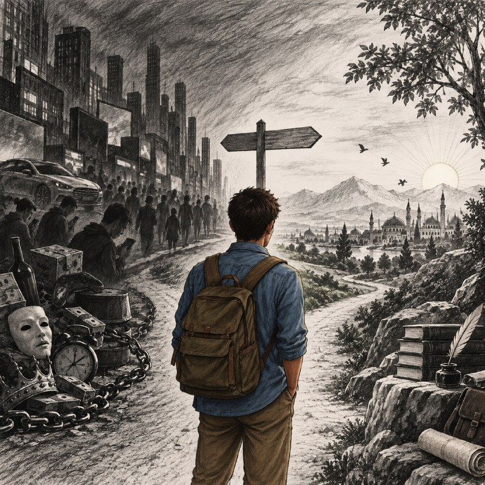

Ozod inson falsafasi

Kirishso‘z
Qo‘liga qalam berilgan odam jamiyatdagi savollarga javob izlaydigan odamdir. Boshqalarni qiynab turgan masalalarni hal qilish bilan shug‘ullanadi. Shu ma’noda u mutafakkir deyiladi. Har bir qalamkash mutafakkir bo‘lishga majbur.
Biz yozishga kirishayotgan navbatdagi risola ilmiy tadqiqot yoki badiiy asar emas, publitsistika yoki sentimental bitiklar ham emas. U kimgadir nafrat sochishni yo kimgadir mehr sotishni reja qilmaydi. Bu asar shu kecha-kunduzda mana shu shakl va mana shu suvratda tug‘ilishi lozim edi. Chunki bu asarga kecha ehtiyoj sezilmagan bo‘lsa, ajab emas. Yozilishi kechiksa, balki dolzarbligi qolmas. Har holda, bugun mazkur mavzuda yozishga muallif bir majburiyat his etdi.
Xudodan yordam so‘rab, uni tezda yakunlashni orzu qiladi.
Kitobning mavzusi bugungi kun odamlarning xayollari, orzulari, yashash tarzlari, fikrlari, qaysidir ma’noda, e’tiqodlarining tavsifi, tahlilidan iboratdir.
Kitob odamlarni ozod bo‘lib yashashga da’vat qiladi. Shubhasiz, bu da’vatning eng mumtozlaridan biri Aziziddin Nasafiyning “Komil inson kitobi” edi. Keyinchalik G‘arbda ham odamni turli iskanjalardan ozod qilishga urinishlar bo‘ldi. Lekin hamon maqsad ushalmagandek – G‘arb modellashtirgan odamlar ozod bo‘lamiz deb tushkunlik, zerikarli kayf-u safo hamda tiyiqsizlikka asir tushgandek. Bu zindonga hammani tortishni istashayotgandek.
Kitob ko‘proq o‘zbek jamiyatidagi bugungi fikriy jarayonlarga diqqat qaratadi. Imkon qadar barcha qatlamlarni qamrab olish maqsad qilingan. Bu ilojsiz bo‘lsa, eng ko‘p ta’sir o‘takazayotgan fikrlarga diqqat qaratiladi.
Tavsif jarayonida muayyan shaxslar yoki guruhlar zikr etilmasligi mumkin. Bu, shunchaki, muallifning tanlovi.
Kitob yoshi kattalarga qiziqarli tuyuladimi, yo‘qmi, noma’lum, lekin ko‘proq yoshlarni fikrlashga jalb etish yo‘lida qog‘ozga tushmoqda. Kitob muayyan mafkura yoki qarashni singdirish yo‘lidan bormaydi.
Balki har bir aql egasini jarayonlar daryosida oqib ketmaslikka chaqiradi; hodisalar botqog‘iga cho‘kmaslikka da’vat etadi, biz qayerdamiz, nimalar qilyapmiz, qayoqqa ketyapmiz degan masalani ikir-chikirigacha muhokamaga tortadi. Muhokamadan hech kim chetda qolmasligi ehtimoli katta. Muhokamada muallifdan tarafkashlik kutmang. Muallif adolat va haqgo‘ylik tarafida turishga kuchini sarflaydi.
Kitob milodiy XX asr oxiridan boshlab XXI asrning 26-yiliga qadar bo‘lgan vaqtda ko‘proq yurtimizdagi fikriy evrilishlarni markazga olib chiqadi. Bugungi tala-to‘p va tezkorlikning tub sabablarini ko‘taradi. Ruh va aqlning qanday o‘g‘irlanib, shahvat va nafsning, jaholat va razolatning qanday muzaffar bo‘layotganidan so‘z yuritadi.
Fikrimizcha, youtubeda keyingi besh yilda urchigan safsatabozliklarni hisobga olmasa, bu bobda tizimli tahlil mavjud emas. Kitob haqida esa hali gap bo‘lishim mumkin emas. Chunki barcha tahlillar siyosiy yo‘nalishda bo‘lgani uchun kutilgan maqsad – qayoqqa ketyapmiz va nimalar bilan bandmiz degan savolning javobi ochiq qolaveradi.
Kirishso‘zimizning oxirgi satrlari xususiylashib qoldi. Demak, kitobning ayrim o‘rinlarida muallifning shaxsiy mulohazalari ham ko‘rinib qolarkan, buni ham hisobga olib o‘qiysiz degan umiddamiz.
Hozircha mundarijamizda bugungi kun bahslari, ma’naviy-fikriy kontekst, g‘arb bilan integratsiyalashuv, taraqqiyot shiddati, kishilar ruhiyati ilk mavzu bo‘lsa, keyin insonni ushlab turgan iskanjalar haqida so‘z yuritsak kerak.
Hech qachon hamma so‘zimiz to‘g‘ri bo‘lmaydi, xato ifodalardan ham to‘g‘ri va haq mazmunni anglashingizdan umidvormiz.
Duolaringizga muhtojmiz, tavfiq Allohdan.
Hurmat bilan Akrom Malik.
Chorshanba oqshomi, 16-sentabr, 2026-yil, 21:43. Toshkent shahri.